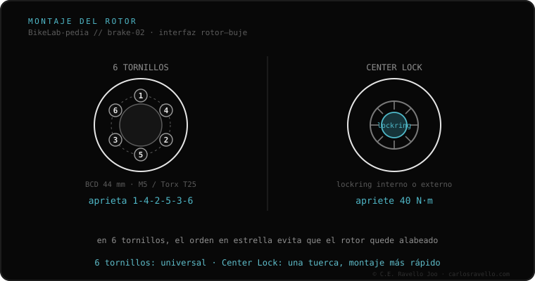

Center Lock es el montaje de rotor estriado de Shimano: el rotor se desliza sobre las estrías del buje y se fija con un único anillo de cierre central (lockring) a 40 N·m. Es más rápido de montar y desmontar que los 6 tornillos y centra el rotor perfectamente. Hay dos tipos de lockring: interno (se aprieta con la herramienta de cassette tipo FR-5) y externo (con herramienta de pedalier; obligatorio en ejes pasantes de 15/20 mm). Aunque es de Shimano, SRAM lo adoptó: es estándar abierto.
Si montar el disco te llevó 20 segundos y una sola tuerca, tienes Center Lock. Rápido, centrado y cada vez más común.
En vez de 6 tornillos, el rotor encaja en el estriado del buje y se bloquea con un lockring central apretado a 40 N·m. Eso elimina el riesgo de alabeo por tensión desigual y acelera el cambio. Atención al tipo de lockring: el interno se aprieta con la herramienta de cassette (no entra en ejes gruesos), y el externo, con la de pedalier, es el obligatorio en bujes de eje pasante de 15/20 mm delanteros.

Encaja solo en bujes con estriado Center Lock (Shimano, SRAM y muchos DT Swiss). Admite rotores Center Lock de cualquier marca (es estándar abierto) y, con un adaptador específico, rotores de 6 tornillos. No entra en bujes de 6 orificios.
Si no sabes qué anclaje, rotor o líquido usa tu freno, mándanos el caso. Diagnóstico real, sin venderte nada. Escríbenos por WhatsApp
40 N·m. Es alto: hay que apretarlo de verdad, aunque la rampa de clics suene; si queda flojo, el rotor baila y daña las estrías.
Depende del lockring: el interno se aprieta con la herramienta de cassette (FR-5); el externo, con la de pedalier (16 muescas), obligatorio en ejes de 15/20 mm delanteros.
Sí. El estriado Center Lock es un estándar abierto que ambas marcas usan de forma idéntica.
© 2026 BikeLab Studio. Contenido bajo CC BY 4.0: puedes copiarlo, traducirlo y publicarlo, incluso con fines comerciales. La cita es obligatoria. Sin atribución, la licencia se revoca de forma automática (CC BY 4.0, §6.a) y el uso pasa a ser una infracción de derechos de autor: solicitamos la retirada del contenido y su desindexación. · Diseño y propiedad: Carlos Ravello Joo